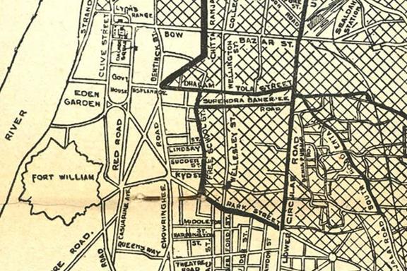
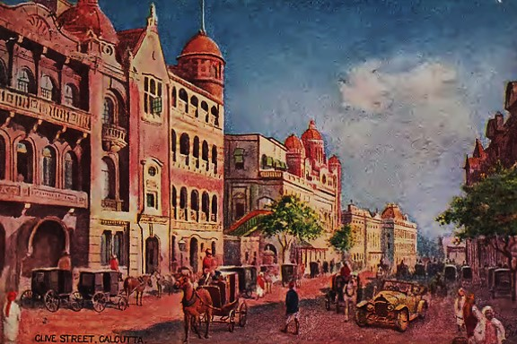
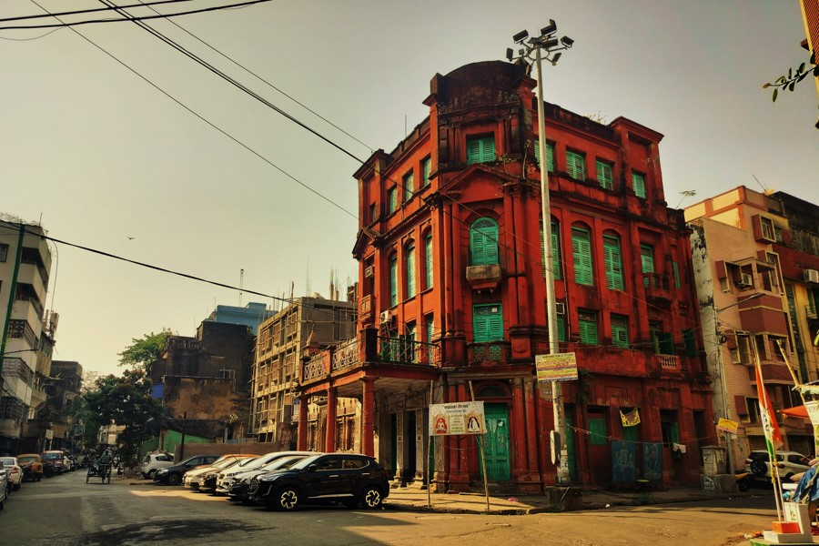

Map
Contents

Blogs
Books

Programmes
About Us
Golpo Holeo Sotyi, golpo holeo sotti, golpo holeo shotti, galpa holeo satyi, গল্প হলেও সত্যি, kolkata history, bengali history, পুরোনো কলকাতার ইতিহাস, ইতিহাসের পাতা থেকে, ইতিহাসের গল্প, kolkata stories, calcutta history, history of kolkata, kolikatar itihas, purono kolkatar golpo, Bengali storytelling, forgotten history of Bengal, Kolkata heritage stories, bangla culture blog, Bengali legends and folktales, old kolkata blog, Bengali culture blog, forgotten Bengali history